Welcome to Statistics

I greet you this day,
First: read the notes.
Second: view the videos.
Third: solve the questions/solved examples.
Fourth: check your solutions with my thoroughly-explained solutions.
Fifth: check your answers with the calculators as applicable.
Comments, ideas, areas of improvement, questions, and constructive criticisms are welcome. You may contact me.
If you are my student, please do not contact me here. Contact me via the school's system.
Thank you for visiting.
Samuel Dominic Chukwuemeka (Samdom For Peace) B.Eng., A.A.T, M.Ed., M.S
Introductory Statistics
Objectives
Students will:
(1.) Discuss statistics.
(2.) Discuss the basic terms used in statistics.
(3.) Discuss the reasons for studying statistics.
(4.) Define data.
(5.) Identify the population, sample, and individual in scenarios.
(6.) Identify the statistic and/or parameter in scenarios.
(7.) Discuss the statistical process.
(8.) Classify variables as qualitative or quantitative.
(9.) Classify quantitative variables as discrete or continuous.
(10.) Classify variables based on the level of measurement of the variable.
Definition
Statistics is the science that deals with the:
Collection
Organization
Presentation
Analysis and
Interpretation of data so as to make the right decision and the right conclusion.
The main reason for studying statistics is to make the right decision and the right conclusion.
The goal of learning statistics is to distinguish between statistical conclusions that are likely
to be valid and those that are seriously flawed.
Teacher: Would you not like to make the right decision in anything you want to do?
What are some of those things? 😊😊😊 Note students responses.
Would you want to be able to differentiate between results that are valid and results that are flawed?
Would you want to be able to prevent any sources of bias when making important decisions?
Welcome to Statistics!
There are basically, two types of statistics:
Descriptive Statistics and
Inferential Statistics
Descriptive Statistics is the science that deals with the collection, organization, and presentation of data.
Inferential Statistics is the science that uses methods that takes the results obtained from a
sample, infers it on the population, and measures the reliability of the results.
Why do we learn Statistics?
(1.) The media uses statistics to predict election polls such as the Presidential election and nominate
people for awards among others.
Example 1: President Barack Obama vs Governor Mitt Romney 2012 Presidential Poll - Gallup Polls
Example 2: Who do Americans blame for the Saturday, December 22, 2018 partial government shutdown?
More Americans blame President Trump for government shutdown - Reuters/Ipsos Polls
Discuss some statistics in those links.
For Example 2, read the second to the last paragraph.
Discuss more real-world examples if time is available.
Ask students to research more "valid" sites.
Hmmmm...how do you know if a website is valid? How do you know if a website is not biased?
(2.) School administrators use statistics to know the performance of the schools in their district, and
make decisions as necessary.
Example 3: The Nation's Report Card - The National Assessment of Educational Progress (NAEP)
Discuss how NAEP obtain their data (data collection) to rate schools in each state.
Discuss some statistics based on their results.
(3.) Health professionals use statistics to know how different people react to different medicines.
(4.) Teachers use statistics to know how to meet the learning needs of their students.
(5.) People use statistics to make informed or decisions on who to marry (typical in Africa and India), what professor's class to take (typical in the United States where "unknown people" insult their teachers and professors), what car to buy, and what school to attend among others.
Data
Data is the list of observed values for a variable.
Data is the fact used to make a conclusion or decision.
It is also referred to as Information.
It is collected from a survey, an experiment, and a historical record among others.
It can be numeric (numbers) such as age, weight, etc. It is more than just numbers, because it has context.
It can also be non-numeric such as color, gender, etc.
The process of posing a question, collecting data, analyzing data, and interpreting the data is known as a
Data Cycle.
Data vary. It changes within an individual. It also changes among individuals.
Understanding the variablity of data is very important in statistics.
Statistical studies rely on two major concepts: Data and Variation.
Collecting data about something involves a study of that thing.
This study could be measured or observed.
That leads us to...
Population, Sample, and Individual
Population is the entire group of individuals or thing that is being studied.
It contains all subjects of interest.
Example: All student matadors (Arizona Western College students).
Sample is a proper subset (part) of the population being studied.
It contains some members of the population.
It contains some of the subjects of interest.
Example: AWC students in South Yuma campus.
Bring it to Algebra: what is the difference between a subset and a proper subset?
Individual is a member of the population being studied.
It is a subject of interest.
Example: An AWC student in San Luis campus.
Exercise 1
For each of these scenarios, identify the population, sample, and individual.
(1.) A 2012 survey of 100 million Nigerians in Nigeria found that they would prefer the
South to secede from the North.
Population: All Nigerians in Nigeria
Sample: 100 million Nigerians in Nigeria
Individual: A Nigerian in Nigeria
(2.) 300 ladies aged 19 to 35 who live in the United States were contacted in a poll.
The poll asked whether they use abstinence as a form of birth control.
Hmmmm...what do you think the results would be?
Population: All ladies aged 19 to 35 who live in the United States
Sample: 300 ladies aged 19 to 35 who live in the United States
Individual: A lady aged 19 to 35 who lives in the United States
(3.) Naboth randomly sampled 125 plants in his farm on June 30 and weighed the chlorophyll in each plant.
Population: All plants in his farm on June 30
Sample: 125 plants in his farm on June 30
Individual: A plant in his farm on June 30
From Question 1 in Exercise 1
Assuming 95 million Nigerians out of 100 million Nigerians said they were ready to secede immediately.
This means that 95\% of the 100 million Nigerians that were surveyed are ready for the secession immediately.
This describes the results of the sample without making any conclusions about the population. (Descriptive Statistics).
Note the population here is the entire Nigerian population.
This leads us to...
Statistic and Parameter
Statistic is a numerical summary of a sample.
A statistic is often referred to as an estimator.
Please note: It is "Statistic", not "Statistics".
No, Statistic is not the singular form of Statistics! 😊😊😊
In our example, the 95% is the statistic.
Suppose we now take this 95% and extend it to the entire Nigerian population. (Inferential Statistics).
Assume we now say that 95% of all Nigerians in Nigeria said they were ready to secede immediately, then the
95% becomes the parameter.
Parameter is a numerical summary of a population.
Did you notice how we went from Descriptive Statistics to Inferential Statistics?
Did you notice how we went from Sample to Population?
Did you notice how we went from Statistic to Parameter?
Is it making sense?
Because a statistic is usually known while a parameter is usually unknown, a statistic is a measurable estimator of an often unknown population parameter.
A statistic is represented by English letters while a parameter is represented by Greek letters.
For example:
(a.) Sample mean (statistic) is represented by $\bar{x}$
Population mean (parameter) is represented by μ
(b.) Sample standard deviation (statistic) is represented by s
Population standard deviation (parameter) is represented by σ
(b.) Sample variance (statistic) is represented by s²
Population variance (parameter) is represented by σ²
In rare cases, the parameters may be represented by English letters.
(d.) Sample proportion (statistic) is represented by $\hat{p}$
Population proportion (parameter) is represented by p
Exercise 2
For each of these scenarios, identify whether the underlined is a statistic or parameter.
(4.) A sample of London residents were surveyed and it was found that 85% had a
bachelors degree or higher.
85% is a statistic because it is the numerical summary of the sample of London residents.
(5.) In a study of all 16000 students of Divine Mercy Academy, it was found that 99% of them speak in tongues.
99% is a parameter because it is the numerical summary of the population, $16000$ students of Divine Mercy Academy.
(6.) By 2014, around 38% of all mobile phone users were smartphone users.
By 2018, this number is expected to reach over 50%.
(Number of mobile phone users worldwide from 2015 to 2020 (in billions) - Statista - The Statistics Portal)
38% is a parameter because it is the numerical summary of all (population) of mobile phone users.
50% is a parameter because it is the numerical summary of all (population) of mobile phone users.
(7.) 26 of the 50 states in the United States voted for Barack Obama in the
2012 Presidential Elections.
(Presidential Election Results - NBC News)
26 is a statistic because it is the numerical summary of a sample of the states in the United States.
50 is a parameter because it is the numerical summary of the population of the states in the United States.
(8.) A homeowner in the City of Truth or Consequences, New Mexico measured the voltage supplied to his home on 6 days of a given week, and found that the average value was 120 volts.
120 is a statistic because it is the numerical summary of a sample, 6 days of a given week.
(9.) The Federal Republic of Nigeria has 36 states.
Assume the areas of 3 of the Southeastern states are added and the sum is divided by 3,
the result is 5301.70566 square kilometers.
5301.70566 is a statistic because it is the numerical summary of a sample, 3 states of the 36 states of Nigeria.
(10.) Median weekly earnings of full-time workers were $887 in the third quarter of 2018.
Women had median weekly earnings of 796, or 81.8 percent of the 973 median for men.
(Usual Weekly Earnings of Wage and Salary Workers Third Quarter 2018 - Bureau of Labor Statistics)
887 is a parameter because it is the numerical summary of the population of the nation's 117.2 million full-time wage and salary workers.
(11.) Of the 100 United States Senators, 77 of them voted for the Iraq war.
(Senate Roll Call: Iraq Resolution - The Washington Post)
77 is a parameter because it is the numerical summary of the population of the nation's 100 senators.
(12.) A study from Harvard University researchers found that of 93,600 women aged between 25 and 42, three or more servings of berries per week may slash the risk of a heart attack by 33%. (Berries may lower women’s heart attack risk - Harvard School of Public Health published in the January 14, 2013 issue of the American Heart Association’s (AHA) journal Circulation)
33% is a statistic because it is the numerical summary of the sample of 93,600 women aged between 25 and 42.
Statistical Process
Statistics is a science because its process follows the scientific method.
The basic steps of a statistical process is:
(1.) Identify the research objective
What do you want to find out about?
What are the necessary questions to be asked?
What is the population of the study?
(2.) Collect the data needed to answer the questions
Use appropriate data collection techniques. (Data Collection)
Gaining access to an entire population is usually difficult.
So, a sample is needed.
How random did take your sample? (Sampling Methods)
How large is your sample size?
(3.) Describe the data
Obtain a descriptive statistics of your sample data. (Descriptive Statistics)
Organize your data. (Data Organization)
Present your data properly. (Data Presentation)
Analyze your data. (Data Analysis)
(4.) Perform Inference
Apply appropriate techniques to extend the results of your sample data to the population of
your study. (Inferential Statistics)
If the sample fairly represents the population as a whole, then it is reasonable to make inferences from the sample to the population.
Report a level of reliability of the results.
What is the confidence level of your results?
What is the margin of error?
In a statistical study, the margin of error is used to describe a confidence interval that is likely to contain the true population parameter.
It is used to describe the range of values likely to contain a population parameter.
It is subtracted from and added to a sample statistic to establish a confidence interval.
In other words, we can find this interval by subtracting and adding the margin of error from the sample statistic that was obtained during the study.
The confidence interval is used to estimate a population parameter.
For example:
Each year, a group surveys 50,000 households to study internet usage.
In one area of the study, the group is interested in finding out how many hours a day the household spends streaming
video from the internet.
Describe the five basic steps in a statistical study with an example of their application below.
First Step: State the goal/objective of your study.
In this case, we want to discover the average amount of time per day that a household spends streaming internet video.
Second Step: Choose a representative sample from the population.
In this case, it would be choosing a sample of 50,000 households.
Third Step: Collect raw data from the sample and summarize these data by finding sample statistics of interest.
In this case, it would be reaching out to those 50,000 households and collecting data from them. We would collect
their data and then turn the data from all of the households into an average.
Fourth Step: Use the sample statistics to infer the population parameters.
In this case, we would look at the average time spent per day streaming internet video and use that number to estimate
for the rest of the population.
Fifth Step: Draw conclusions to determine what you learned and whether you achieved your goal.
In this case, we see that we have an average for time spent streaming internet video and conclude that we achieved our
goal.
Once a research objective is stated and the population is identified, the researcher must create a
list of information of the individuals of the population.
This leads us to...
Variables
A variable is a characteristic of the individual of the population being studied.
Vocabulary Words/Hint: vary, varies, variable, variability, variation
As the name implies, it always "varies".
Variables can be classified as:
Qualitative Variables or Categorical Variables
Vocabulary Words/Hint: quality, category
and
Quantitative Variables or Numerical Variables
Vocabulary Words/Hint: quantity, numerical(number)
Quantitative variables can be further classified as:
Discrete Variables
Vocabulary Words/Hint: quantity you can count
and
Continuous Variables
Vocabulary Words/Hint: quantity you can measure
Qualitative and Quantitative Variables
Qualitative Variables (also known as Categorical Variables) are variables that express qualitative
attributes of the individuals of a population.
They are not measurable.
They are usually not numerical values.
Examples are: gender; color such as eye color, hair color; religion; street names; and zip codes
(yes because even though USA zip codes are numbers, they are not countable or measurable) among others.
Even though categorical variables are not numeric, we can use numeric values to represent parts of a category or to
differentiate a category from a non-category.
For example: for the variable: Gender, we can use represent the Female gender with 0 and the Male gender with 1.
Also, we can represent a Smoker with a 1 and a Non-smoker with a 0.
The process of representing categorical variables with numbers is known as Coding.
Sometimes, it is necessary to code categorical data to work with some statistical software especially if the categorical
data is part of a numerical data (if one of the columns of the data is categorical and the other columns are numerical).
Quantitative Variables are variables that express numerical measures of the individuals
of a population.
They are measurable or countable.
They have a numerical value (number value).
Examples are: number of ...."anything you can count", price, age, area, volume,
temperature, weight, height, size, length, etc.
Quantitative Variables: Discrete Variables and Continuous Variables
Discrete Variables are quantitative variables that has a finite or countable number of values.
If you can count to get the value of the quantitative variable, then that variable is discrete.
Examples are: the number of ...."anything you can count"
such as the number of GNTC (Georgia Northwestern Technical College) students, capacities of different buildings,
etc.
Students should give more examples
Continuous Variables are quantitative variables that has an infinite or uncountable number of values.
If you can measure to get the value of the quantitative variable, then that variable is continuous.
Examples are: weight, height, size, percentage, volume, area, time, distance, temperature,
pressure, length, etc.
Students should give more examples.
Exercise 3
(13.) Is age a discrete or continuous variable?
Well, it depends!
Age (in years only) is a discrete variable. You can count it. For example: 25 years, 30 years, etc.
Age (that includes years, months, weeks, days, hours, minutes, and seconds) is a continuous variable.
You cannot really count it. For example: 25.5 years, etc.
We also have ...
Dependent and Independent Variables
Dependent Variable is:
A variable that depends on another variable/other variables.
Also known as the response variable
Variable that is predicted
Outcome/result of a study
The y-value of a function
Independent Variable is:
Variable that is not dependent on any other variable.
Also known as the explanatory or predictor variable
Variable that explains the response variable
The x-value function
Recall: In Algebra and Calculus;
y = f(x)
y is the dependent variable.
x is the independent variable.
Bring it to Statistics
y is the response variable.
x is the predictor or explanatory variable.
Bring it to Philosophy
y is the effect.
x is the cause.
Bring it to Economics/Business
y is the output.
x is the input.
Bring it to Psychology/Human Behavior/Sociology
y is the consequence.
x is the action.
Examples:
(1.) The weight (quantitative: continuous variable) I gained in the United States
(I was skinny in Nigeria) was dependent on the number of MacDonald's cheeseburgers I ate
(quantitative: discrete variable) 😊😊😊
In this case, weight is the dependent variable and
number of burgers is the independent variable
(2.) GPA (grade point average - quantitative - continuous variable) is dependent on the number of "meaningful"
hours of study (quantitative: discrete variable)
In this case, GPA is the dependent variable and
number of meaningful study hours is the independent variable
Students should give more examples.
Stacked (Narrow/Long) Data and Unstacked (Wide) Data
My preference is unstacked data because it is an organized data.
However, some data downloaded from the Internet or some raw data you collect may be stacked.
Hence, it is important to know the meaning of both forms of data.
Unstacked Data also known as Wide Data is the data table where the main row (table headings) are the
variables and subsequent rows contains the values (observations) of the variables.
Stacked Data also known as Narrow Data or Long Data is the data table where one column contains the
variables and other columns contain the values (observations) of the variables.
Let us review examples.
| Dog Breed | Size | Temperament |
|---|---|---|
| French Bull Dog | Small | Playful |
| Labrador Retriever | Medium-Large | Intelligent |
| Toy Poodle | Small | Smart |
| Dog Breed | Variable | Value |
|---|---|---|
| French Bull Dog | Size | Small |
| French Bull Dog | Temperament | Playful |
| Labrador Retriever | Size | Medium-Large |
| Labrador Retriever | Temperament | Intelligent |
| Toy Poodle | Size | Small |
| Toy Poodle | Temperament | Smart |
Exercise 4
(14.) A sample of students were questioned to determine how much they would be willing to pay to see a movie in a
theater that served dinner at the seats, with the accompanying results (in dollars).
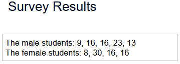
(a.) Write these data as they might appear in stacked format with codes.
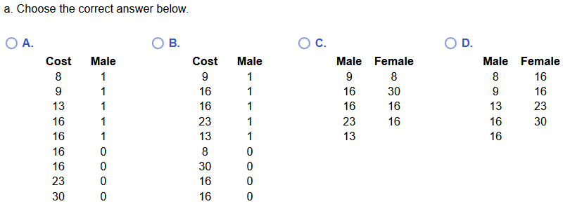
(b.) Write these data as they might appear in unstacked format.
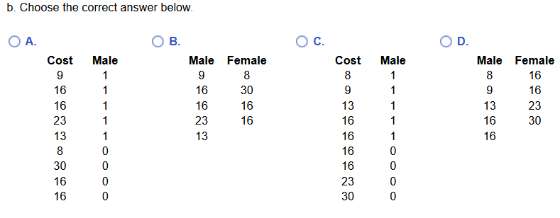
(a.) There are 5 male students and 4 female students.
Coding the male students as 1 and the female students as 0, the stacked format with codes will show: 5 1's and 4 0's in one column alongside the respective costs provided by the male and female students respondents in another column.
This implies that the correct answer is Option B.
(b.) The unstacked data (without codes because the question did not ask us to provide codes) will show the costs provided by the male students in one column and the costs provided by the female students in another column.
It is okay for the headings to be labeled as Male and Female respectively. However, it is much better for the headings to be labeled appropriately such as: Cost by Male Students and Cost by Female Students respectively.
The correct answer is Option B.
Data and Variables
The type of variable dictates the methods that can be used to analyze the data.
Qualitative data are observations corresponding to a qualitative variable.
Quantitative data are observations corresponding to a quantitative variable.
Discrete data are observations corresponding to a discrete variable.
Continuous data are observations corresponding to a continuous variable.
We can also classify variables based on the ...
Level of Measurement of a Variable
The level of measurement of a variable determines the types of descriptive statistics and
inferential statistics that may be applied to a variable.
It is an important factor in determining what tools may be used to describe the variable and what means
of analysis to use for inference about the variable.
Rather than classify a variable as qualitative or quantitative, we can assign a level of measurement
to the variable.
The levels of measurement of a variable are:
Nominal level of measurement
Ordinal level of measurement
Interval level of measurement
Ratio level of measurement
Nominal Level of Measurement
A variable is at the nominal level of measurement if the variable deals with name, label,
category, or code and where the order of ranking is not relevant.
Vocabulary Words/Hint: "nominal" means "name"
Examples are:
Race: African-American, Alaskan native, American Indian, Asian, Caucasian, Pacific Islander, etc.
Ask students if they have filled any application for employment or internship.
Did they realize they were doing some Statistics!?
Nationality: Nigeria, United States, etc.
Religion: Christianity, Judaism, Islam, etc.
Marital Status: Married, Single
Gender: Female, Male
Favorite sports of people identified as $1$ for Soccer, $2$ for Basketball, $3$ for Football
(the order of ranking is not important)
Survey responses of "yes" or "no" (the order of ranking is not important)
Social security numbers
Types of food dishes
Types of music
Types of movies
Companies that closed locations and fired workers in $2018$
Companies that filed for bankruptcy but paid the CEOs a lot of bonuses
among others.
Ordinal Level of Measurement
A variable is at the ordinal level of measurement if the variable deals with name, label,
category, or code where the order of ranking is relevant, but
the differences between the values of the variable cannot be found or
the differences between the values of the variable can be found but are not meaningful.
Vocabulary Words/Hint: "ordinal" means "order"
Examples are:
Likert Scales: Strongly Agree, Agree, Neutral, Disagree, Strongly Disagree etc.
Ask students if they have filled surveys or polls.
Of course they have! or they may...😊😊😊 in evaluating the professor!
Grades: A, B, C, D, F etc.
Rankings or Ratings: 1st, 2nd, 3rd, five stars, three stars, etc.
Levels: High, Medium, Low, etc.
Thumbs up, Thumbs down,
Internet speed levels of fast, medium, slow
Alert levels identified as $10$ for Low, $20$ for Medium, $30$ for High
(the order of ranking is important)
Positions of people in a line
among others.
Interval Level of Measurement
A variable is at the interval level of measurement if the variable deals with name, label,
category, or code, where the order of ranking is relevant,
the differences between the values of the variable can be found and are meaningful, and
there is no natural starting point.
Examples are:
calendar dates
Celsius temperatures
Fahrenheit temperatures
years in which an economic recession occurred
among others.
Ratio Level of Measurement
A variable is at the ratio level of measurement if the variable deals with name, label,
category, or code, where the order of ranking is relevant,
the differences between the values of the variable can be found and are meaningful, and
there is a natural starting zero point.
Examples are:
time in minutes, time in hours
acres of land
ages in years
weights in kilogram
Kelvin temperatures
number of buildings
among others.
Exercise 5
(15.) Identify the individuals, variables and their corresponding data, and the type of variable
in the table.
| Participants | Weight(lb.) | Type | Price($) |
|---|---|---|---|
| A | 160 | Athletic | 25 |
| B | 250 | Muscular | 50 |
| C | 120 | Athletic | 16 |
| D | 100 | Skinny | 10 |
| E | 300 | Obese | 93 |
Individuals are the participants: A, B, C, D, and E
Variables are: Weight(lb.), Type, and Price($)
Variables and their corresponding data are:
Weight(lb.): $160, 250, 120, 100, 300$
Type: Athletic, Muscular, Athletic, Skinny, Obese
Price($): $25, 50, 16, 10, 93$
Variables and the types of variables are:
Weight(lb.) is a quantitative variable: continuous variable
Type is a qualitative variable
Price($) is a quantitative variable: discrete variable
(16.) A study looked at the impact of berries consumption in women.
Of the 93,600 women aged 25 to 42 involved in the study, it found that three or more servings
of berries per week may slash the risk of a heart attack by 33%.
Assume the study was done with a margin of error of 5% and a 95% confidence level.
(a.) What is the research objective?
(b.) Identify the population
(c.) Identify the sample.
(d.) List the descriptive statistics.
(e.) What can be inferred from the study?
(a.) The research objectives is to determine the effect of berries consumption in reducing the risk of heart attack in women.
(b.) The population is all women aged 25 to 42
(c.) The sample is the 93,600 women aged 25 to 42
(d.) The descriptive statistics is: "it found that three or more servings of berries per week may slash the risk of a heart attack by 33% in women."
(e.) It can be inferred that the study is 95% certain that three or more servings of berries per week may slash the risk of a heart attack between 28% and 38%
Ask students if they know how the values of 28% and 38% were obtained.
Data Collection
Objectives
Students will:
(1.) Discuss the collection of data.
(2.) Note the main difference between association and causation.
(3.) Compare the two methods used for collecting data.
(4.) Contrast the two methods used for collecting data.
(5.) Explain the various types of observational studies.
(6.) Explain the principles of a well-designed experiment.
(7.) Obtain a simple random sample.
(8.) Obtain a stratified sample.
(9.) Obtain a systematic sample.
(10.) Obtain a cluster sample.
(11.) Differentiate between statistical significance and practical significance.
(12.) Explain the sources of bias in sampling.
Vocabulary Words
response variable, outcome variable, explanatory variable, predictor variable, treatment variable, observational studies, controlled experiments, treatment group, control group, comparison group, statistical significance, practical significance, replication, randomization, sample size, blinding, double-blinding, placebo, confounding, lucking variable, cross-sectional studies, case-control studies, retrospective studies, cohorts, longitudinal studies, prospective studies, bias, random sampling, sample random sampling, stratified sampling, cluster sampling, systematic sampling, convenience sampling, random number table, sampling frame, randomized design, matched-pairs design, association, causation
Data Collection Methods
There are two basic methods of collecting data. They are:
Observational Studies and
Experiments/Designed Experiments
Observational Studies measure the value of the response variable without attempting to influence
the value of either the response variables or explanatory variables.
We measure and observe specific characteristics of subjects without attempting to modify the
subjects.
Experiments or Designed Experiments is when we assign individuals to certain groups or
experimental units (known as control/comparison and treatment groups), intentionally change the value
of the explanatory variable, and then record the value of the response variable for each group.
The treatment group in an experiment is the group of sample members who receive the treatment being tested, while the control group does not receive the treatment being tested.
The response variable is also known as the outcome variable.
The explanatory variable in this case, can be referred to as the treatment variable.
It is also known as the predictor variable.
Observational Studies
There are three categories of observational studies. They are:
(1.) Cross-sectional Studies: These are observational studies that collect data about individuals at a specific period in time or over a very short time period.
(2.) Case-control or Retrospective Studies: These are observational studies that collect data about individuals from past time periods.
When there are cases and controls in a retrospective study, the cases effectively represent a treatment group and the controls effectively represent the control group.
(3.) Cohort or Prospective or Longitudinal Studies: These are observational studies that
collect data about a group of individuals otherwise known as cohorts over a long period of time.
Exercise 1
Identify the category of observational study.
(1.) A researcher plans to obtain data by interviewing the relatives of victims of the Malaysia Airlines Flight 370 (MH 370) to study the psychological breakdown on the loss of their loved ones.
This is a cross-sectional study because data is being collected regarding an event that occurred during a specific period of time.
(2.) A researcher plans to obtain data by interviewing the relatives of Americans killed by police officers.
She will interview the relatives and non-relatives of those victims over the next ten years to determine how closeness to a tragic event
might affect recovery time.
This is a cohort study because data is being collected about two different cohorts (related cohorts and unrelated cohorts) regarding a tragic event over a long period of time.
(3.) The Justice Department plans to obtain data on police interrogations and practices by investigating the Cleveland Division of Police over the past five years.
This is a case-control study because data is being collected about individuals from past periods of time.
(4.) Researchers compared the rates of autism for children who received the standard measles-mumps-rubella vaccine and also for children who did not receive the vaccine to see if the vaccine might be responsible for autism in some children.
This is a case-control study because data is being collected about individuals from past periods of time.
(5.) Researchers classified pregnant women as being non-drinkers or light, moderate, or heavy drinkers. They examined the weights of the children of these women at regular age intervals to see if taking alcohol during pregnancy results in poor growth.
This is a cross-sectional study because data is being collected regarding an event that occurred during a specific period of time.
Teacher: Please give more scenarios/examples of each category of observational studies.
Controlled Experiments
Does drinking 3 to 5 cups of coffee a day lower the risk of heart attacks?
(3 to 5 Cups of Coffee a Day May Lower Risk of Heart Attacks - Live Science)
Someone read this article, got curious, and wanted to try it out.
Say we wanted to do an experiment to determine whether the statement is true or false or neither.
What do you think should be our population?
Should we have two different populations? Why or why not?
Please note the students responses.
At this moment, we do know we need:
(1.) sample of people who drink 3 to 5 cups of coffee daily and
(2.) sample of people who do not drink coffee at all.
Student: Hmmm...but you asked for "population", and now you mention "sample". Why?
Teacher: Good observation. Having access to a population is usually difficult.
Hence, we need a sample that is representative of the population.
Selecting that sample is actually one of our objectives for this lesson.
So, let us discuss how to do this experiment. What do we need? What should be the
procedures? What are the requirements?
(1.) We shall need a large sample of people.
How large should the sample size be? That is a good question. We shall get to it when we do
Inferential Statistics.
However; the larger, the better.
Also, it is better to observe those people for an extended period of time. How long? It is not for
eternity of course! It should not be for a few days either. However; the longer, the better.
Taking repeated measurements on each individual might be helpful in obtaining more precise results
in an experiment.
(2.) We will need to divide the sample into two groups:
A treatment group that would actually drink 3 to 5 cups of coffee a day and
A control group (or comparison group) that would not drink coffee.
The participants should not be allowed to choose which group to belong to.
You should not give them that option of: those who like coffee (like me 😊) go to one group and those who do not like coffee to go to another group.
In an experiment studying the association between a treatment variable and an outcome variable, the group of people who receive the treatment is the treatment group
while the group of people who do NOT receive the treatment is the control group.
Speaking like an American...why is that? 😊
You shall soon find out before the end of this section.
Randomly select the samples and place them in the two groups so that they are approximately the same size.
How do you randomize?
No worries. Please read on 😊
Here is the main reason why we do not want Convenience Sampling: we want to avoid bias.
If we allow participants to decide what groups to belong, it creates a bias.
Student: What is bias?
Bias is the tendency of a statistic to underestimate or overestimate a parameter.
It refers to any problem in the design or conduct of a statistical study that tends to favor certain results.
Examples of several forms of bias include:
(1.) A non-representative sample
(2.) A researcher with a personal stake in the outcome distorts the true meaning of data.
(3.) An experiment that is not blinded.
An inference method is biased if it has a tendency to produce an untrue value.
Bias can enter a survey in about four ways.
The first is through sampling bias, which results from taking a sample that is not representative of the population.
Sampling Bias occurs when a sample is not representative of the population.
A second way is measurement bias, which comes from asking questions that do not produce a true answer.
Measurement Bias occurs when the method of data collection does not produce valid results.
Another way is through some participants who have strong feelings about the survey.
Voluntary Response Bias occurs when voluntary participation in surveys results in people responding who tend to have strong feelings about the results.
The fourth way is through some participants who do not have strong feelings about the survey.
Nonresponse Bias occurs when people selected to participate in a survey fail to answer a question or to respond to the survey.
So far, we have mentioned two sampling techniques. What are they? May you define each of them?
The treatment group and the control group should be similar in every possible way.
To accomplish that goal, randomization should be used.
(3.) The study should be double-blind.
An experiment is single-blind if the participants do not know whether they are members of the treatment group or members of the control group, but the experimenters do know who belongs to which group.
An experiment is double-blind if neither the participants nor the experimenters know who belongs to the treatment group and who belongs to the control group.
You, the researcher should appoint an independent person who would give 3 to 5 cups of coffee to one group and a placebo to the other group.
Hmmmm...what is a placebo?
Okay, story time!
Esther is a little baby girl. She is 3 years old. She likes viewing TV shows and she likes to play video games for hours.
One day, she complained of headache after playing video games for 3 hours. Her mother wanted her to
rest(because her mother knew it was due to long screen exposure) but she insisted she wanted to see the family doctor and take medicine.
After much crying and deliberation with a 3-year old, they decided to go to the family doctor.
Her mother sent a text to the doctor and notified her of the situation.
The doctor greeted Esther as usual and assured her she would be okay soon.
The doctor then gave her a peppermint (rather than a medicine) and asked her to take it with water.
Esther took the "medicine" and after a few hours, she was fine. In her mind, she thought she took a
medicine. In reality, she did not.
In this case, that peppermint is known as the placebo.
Do you want another explanation?
Teacher: Okay, story, story...
Students: Story!
Nahum is a little boy. He is 12 years old. He does not eat pork.
He grew up with the understanding that pig is an unclean animal. His parents informed the school
accordingly that Nahum should never eat pork or anything with pig by-products.
One day, his mother took him to the school's end-of-year party.
Nahum came back and after some time, began to complain of stomach ache.
The mother prayed for him and asked him what he ate.
He replied that he ate a sandwich. After eating it, one of his classmates had teased him (and he
believed) that the meat in the sandwich contained pork. He had been thinking about it and felt
it was the reason for the stomach ache.
Angrily, the mother called the school and demanded for explanations.
The school official assured her that it was not pork. It was a bison burger.
His classmate was made to apologize to Nahum and repeatedly informed him he was teasing him.
Nahum's stomach ache is now gone!
In this case, the bison meat is known as the placebo.
Teacher: Alright. After these stories, may you define a placebo?
A placebo is a harmless substance or a sham procedure given for the psychological benefit to
a patient than for any physiological benefit.
Student: We now have two new words: psychological and physiological
Teacher: Yes! Compare and contrast those words. What do they mean?
If you, the researcher are directly involved in assigning the groups, you may know some or all the subjects.
You may give special advice or encouragement to one group and not to the other group.
You should avoid interacting with the participants. This is known as Blinding.
Also, except for ethical reasons; the participants should not know the purpose of the experiment.
This is known as Double-Blinding.
This is because if some of them know that they are in the treatment group, they may behave differently than
they would, if they did not know about their group assignment. Perhaps, they might want to drink more coffee.
We want to avoid that situation.
Teacher: So, if the researcher does not know which participants are in the treatment group or control group;
it is called ...
Teacher: If the researcher nor the participants do not know which participants are in the
treatment group or control group;
it is called ...
The study should be double-blind.
This means that the researcher and the participants should not know which participants are in the treatment group or
control group.
Student: But, this is difficult.
Teacher: how?
Some people in the control group might see some people in the treatment group drinking coffee.
They might want to taste/drink the coffee too.
Student: How do you avoid that?
Teacher: Very good observation and question.
Give them a placebo.
Give them something that looks like coffee and tastes like coffee, but is not coffee.
Hmmmm...what could that be? Please note their responses.
A placebo is usually given to the control group so they would not feel left out when
they see those in the treatment group taking something.
In summary, the characteristics of a good controlled experiment are:
(1.) Large sample size: The study should include the full range of the variation among the population
and allow for small differences to be noticed.
Studying many cases is more helpful that studying a few cases.
(2.) Controlled and randomized: Random assignment of subjects to treatment and control groups
to minimize bias.
Random assignment is used to assign people to treatment groups and control groups in a controlled experiment to make the groups as similar as possible, minimizing bias.
Randomizing the individuals into groups is one way of preventing accidental bias in the study.
Bias is the tendency of a statistic to underestimate or overestimate a parameter.
There is a bias when the results are influenced in any particular way.
Also, controlling more variables in planning an experiment helps ensure each study group is similar
to the other study groups.
(3.) Double-blind: Neither the subjects nor the researcher should know who is in which group.
(4.) Placebo: A placebo lacks the active ingredients of the treatment being tested in a study, but looks or feels enough like the treatment so that participants cannot
distinguish whether they are receiving the placebo or the real treatment.
The purpose of a placebo is to prevent participants from knowing whether they belong to the treatment group or the control group.
Using a control group with a placebo is important since otherwise subjects in the control group may behave differently than those in the treatment group.
The placebo effect refers to a situation in which a patient improves simply because they believe they are receiving a useful treatment. It can sometimes be difficult or impossible to distinguish between effects that arise from the actual treatment and those that arise from psychological factors.
Statistical Significance and Practical Significance
Statistical Significance is achieved when the result of an experiment is very unlikely to occur by
chance.
Practical Significance is related to whether common sense suggests that the treatment makes
enough difference to justify its use.
It is possible for a treatment to have statistical significance, but not practical significance.
Exercise 2
(6.) Identify the variables in this article.
Proceedings of the National Academy of Sciences
A January 31, 2011 report randomly assigned 120 elderly men and women who volunteered to be part
of this study (average age of mid-$60$s) to one of two exercise groups.
One group walked around a track three times a week.
The other group did a variety of less aerobic exercises, including yoga and resistance training with hands.
After a year, brain scans showed that among the walkers, the hippocampus (part of the brain responsible
for forming memories) had increased in volume by about 2% on average. For the others, it declined by about 1.4%.
The explanatory variable is the expansion of the type of exercise.
The response variable is the change in the volume of the hippocampus.
(7.) Is the study an observational study or controlled experiment?
Breast milk versus Formula - LIVE SCIENCE
The study involved $234$ infants who were divided into three groups.
One group was exclusively breast-fed for the first four months of life.
Infants in the other two groups were randomly assigned to receive either a low-protein or a high-protein formula.
When the infants were $15$ days old, the levels of the hormone, insulin in their blood was measured.
The study is a controlled experiment because the researchers controlled one variable to determine the effect on the response variable. There was at least a treatment group (exclusive breastfeeding) and a control group (given formula).
(8.) Is the study an observational study or controlled experiment?
A student watched people with a cooler of soft drinks to see whether teenagers were less likely than
adults to choose diet sodas over the regular sodas.
This is an observational study because the subjects (the people) were not given treatments. The subjects were not modified.
(9.) Is the study an observational study or controlled experiment?
Records of patients who have had broken ankles were examined to see whether those who had physical
therapy achieved more ankle mobility than those who did not.
This is an observational study because the subjects (the patients) were not given treatments. They were just examined. The researchers did not assign subjects to the control or treatment group beforehand, they did not satisfy a key feature of controlled experiments.
(10.) Is the study an observational study or controlled experiment?
A researcher was interested in the effect of exercise on memory. She randomly assigned half of a group
of students to run a mile and the other half to sit and relax during that period.
Each student was then asked to memorize a series of random $9-digit$ numbers.
She compared the numbers of digits remembered for the two groups.
This is a controlled experiment because she separated her students into at least two groups - the treatment group (the runners) and the control group (the sitters).
(11.) Is the study an observational study or controlled experiment?
A group of teenagers were randomly divided into two groups.
One group watched violent video games for an hour.
The other group watched non-violent video games for an hour.
The teenagers were then observed to see how many violent actions they take in the next two hours,
and the two groups were compared.
This is a controlled experiment because the subjects (the people) were divided into the treatment group (those that watched the violent video games) and the control group (those that watched the non-violent video games).
(12.) Is the study an observational study or controlled experiment?
A researcher was interested in the effects of exercise on academic performance on students.
He attended the physical education class, and noted the students who were exercising, and those
who did not. He then compared their grades.
This is an observational study because the subjects (the patients) were in the treatment group (those who exercised) or control group (those who did not exercise) by their own voluntary decisions.
Teacher: Please give more scenarios/examples of observational studies and controlled experiments.
Compare and Contrast Observational Study and Controlled Experiments
| Observational Study | Controlled Experiment |
|---|---|
| In an observational study, researchers do not attempt to influence the characteristics of the sample members. | In an experiment, researchers apply a treatment and then observe the effects of the treatment. |
| Subjects are divided into treatment groups (the groups you modify) and control groups (the groups not modified) by the researcher. |
Subjects may or may not be divided into treatment groups and control groups. If the subjects are in groups; it is of their own decisions, or by someone other than the researcher. In other words, subjects in the study are put into the treatment group or the control group either by their own actions or by the decision of someone not involved in the research study. |
| Allows us to claim association between an explanatory variable and a response variable. |
Allows us to claim causation between an explanatory variable and a response variable. Questions about causality are usually phrased in the form of "What if...?" questions. The outcome variable in a question about causality is also referred to the response variable. Controlled experiments is the only method of data collection suitable for making conclusions about causal relationships. |
Student: What is the difference between association and causation?
How does observational study claim association while controlled experiment claim causation between the explanatory and response variables?
Teacher: Good question.
We shall discuss these concepts in detail when we discuss Correlation and Regression
But, here are some questions to guide your thought process.
Name some things/phenomenon associated with old age.
Name some things/phenomenon that causes cancer.
Which is better: Observational Study or Designed Experiment?
Is Intelligence inherited or acquired?
This is still a question that does not have a generally accepted answer.
Some Nigerians claim that intelligence is inherited, and not acquired.
I have been involved in several debates where the issue is whether intelligence was purely from
nature, or nurture, or both. What is your opinion?
While there have been some scientific studies that support the statement that intelligence is
genetically inherited, let us consider these two cases.
1st case: The father is intelligent. The mother is intelligent. They were educated and
wealthy. But, they had alcohol and drug issues. They have a son. The child was not breast-fed by the
mother. The child did not attend school early. Due to bad parenting, the child developed a learning
disability.
2nd case: A Nigerian child was born by poor uneducated and not-so-smart parents. However,
the child was breast-fed by the mother. The parents though poor, ate natural foods. They fed their
child well. They worked very hard to make sure their child was educated. They taught their child
several life skills including music, swimming, and farming among others. They were very involved in
their child's education. The child made all A'a in school.
Would you classify this scenario as an observational study or a designed experiment?
This could be a designed experiment. Come to think of it - breast-feeding your child and fully
participating in your child's education makes a lot of difference!
Imagine the scenario of an observational study in this case
Interview five families who happen to be intelligent.
Their children were intelligent as well.
You did the same for five unintelligent families and got the same results.
Then, you go ahead and concluded that intelligence is inherited, or purely by nature without
performing any experiments!
This is known as Confounding. Confounding is a major problem with observational studies.
How do you feel making conclusions just by interviewing people without trying to see if there are
underlying factors which affect the results?
So, if you observe both scenarios - a designed experiment and a an observational study: which of them
do you observe the several factors that affects the IQ (Intelligence Quotient) of the child?
If we just did the observational study, we miss these factors.
But, when we do the experiment, we ask why. That leads us to account for these factors.
These factors are known as lurking variables.
Most times, the cause of confounding is a lurking variable.
Confounding in a study occurs when the effects of two or more explanatory variables are not
separated. Therefore, any relation that may exist between an explanatory variable and the response
variable may be due to some other variable or variables not accounted for in the study.
A confounding variable is an explanatory variable that was considered in a study whose effect cannot be distinguished from a second explanatory variable in the study.
It is a difference between two groups in an observational study that can explain why the outcomes were very different between the groups.
A lurking variable is an explanatory variable that was not considered in a study, but affects
the value of the response variable in the study.
Lurking variables are typically related to explanatory variables in the study.
Sampling Frame
Sampling Frame is the source from which a sample is taken.
It is the list of all those subjects within a population that can be sampled.
This may include individuals and institutions among others. Sometimes, it is confused with
population. However, there is a "little" difference.
Let us look at the example.
The Division of Mathematics and Engineering at Arizona Western College (AWC) wanted to know the
proportion of students who would want at least a Statistics course to be required for every student
before graduation.
The Division of Business and Computers offered to conduct the survey.
A simple random sample of 700 students were selected from all the enrolled students in
business and computer science classes.
A survey form was sent by email to these students.
Exercise 3
(13.) Identify the population and the sampling frame.
The population are all AWC students.
The sampling frame are all the enrolled students in business and computer science classes.
It is usually cumbersome and sometimes impossible to survey an entire population.
Therefore, it is necessary to survey a sample from the population.
The sample should be chosen/selected such that it should be a representative of the population.
The characteristics of the individuals in the sample must represent the characteristics of the individuals in the population.
A representative sample is a sample in which the relevant characteristics of the sample members match those of the population.
This is necessary for the results of the survey to be reliable.
Also, it is important that a statistical study use a representative sample because of inferential statistics. If the sample fairly represents the population as a whole, then it is reasonable to make inferences from the sample to the population.
This implies that the sample should be selected randomly.
For example:
Assume we want to determine the average height and weight of students at BRCC by measuring the heights and weights of a sample of 100 students.
A sample consisting only of members of the football and basketball teams would not be reliable, because these athletes tend to be bigger and taller than most students.
In contrast, assume we select our sample with a computer program, random number table, or a statistical software that randomly draws student numbers from the entire college population.
In this case, the 100 students in our sample are likely to be representative of the entire student body.
Therefore, we can expect that the average height and weight of students in the sample are reasonable estimates of the averages for all students.
Student: How do we select such a sample?
Teacher: Good question. Random Sampling is key. We shall discuss the techniques/methods.
Say you want to run a Presidential poll, and you attend a Democratic event rally to survey the people,
your results are bound to be misleading. This is because your audience will primarily be
Democrats. Your audience at that event does not represent the population of the United States. You
should survey an appropriate size of the random samples of individuals from all the states.
Random Sampling is the process of using probability/chance to select individuals from a
population to be included in the sample.
Each individual in the population has an equal chance of being selected.
Randomization is used when subjects are assigned to different groups through a process of
random selection.
Sampling Techniques
The sampling techniques are:
(1.) Simple Random Sampling: This is a sampling technique in which a sample of size, n is
selected from a population N in such a way that every possible sample of size n has an equal likely chance of being selected.
Simple random sampling is usually done without replacement, which means that a subject cannot be selected for a sample more than once.
A Simple Random Sample is the sample of size n, drawn from a population N in such a way
that every possible sample of size n has an equal likely chance of being selected.
Exercise 4
(14.) Students at GNTC were asked to select three songs from a list of nine free songs available for
download.
The songs are labeled Song 1, Song 2, Song 3, Song 4, Song 5, Song 6, Song 7, Song 8, and Song 9.
What ways can they select these songs to produce a sample random sample?
First way: List each song on a separate piece of paper.
Fold them in such a way that the song titles are not visible.
Place them in a container.
Close your eyes and pick three.
Student: This is similar to raffle-drawing events.
Teacher: That is correct. It is one of the ways to select a simple random sample.
Second way: Use a Table of Random Numbers.
There are several random number tables.
You may use any table from a tertiary institution, .edu or from a governmental institution .gov
We shall use a portion of the Table of Random Numbers written as:
$51111 \hspace{5em} 60678 \hspace{5em} 09822$
Solution 2:
Beginning from the left and taking the first three numbers between 1 and 9, the three songs that would be selected are: Song 5, Song 1 and Song 6.
Student: May you please explain how you selected the songs based on that portion of the Random Number table?
Teacher: Sure. Beginning from the first digit of the first number on the left; Song 5 is selected first.
Song 1 is selected next.
The third also lands in Song 1. However, Song 1 has already been selected. It cannot be selected twice.
This is a without replacement event (relate with Probability).
The next song to be selected will then be Song 6
Third way: Use Technology to produce random numbers from which three different one-digit numbers corresponding to the songs are selected.
Let us do it.
Show students how to obtain random numbers using:
Microsoft Excel
Pearson Statcrunch
TI-84
Table of Random Numbers - NIST (National Institute of Standards and Technology)
(https://www.nist.gov/system/files/documents/2017/04/28/AppenB-HB133-05-Z.pdf)
Other statistical software as applicable such as Google Spreadsheets, IBM SPSS, and Minitab among others.
You may also mention:
Research Randomizer
Random.Org
Some of these websites are used in door prizes /raffle draws during webinars.
Generating Random Numbers Using Technology
We can generate random numbers using Technology/Statistical Software.The first thing we want to do is to Seed the random number generator.
To seed a random number generator is to initialize the random number generator.
We are telling the technology the place to begin from (customizing the starting number), before generating the random numbers.
If we do not set the seed, the technology assigns a seed.
If you are teaching a large class, it is important for students to set the seed value.
This could be the date of birth: MMDDYY because the probability of having two students with the same date of birth: MMDDYY is small.
If students do not set the seed value, it is likely that two or more students may get the same random numbers.
To avoid getting the same random numbers, it is important to use different seed values.
Using the same seed value displays the same random numbers.
Generating Random Numbers Using TI-84
(1.) Set the seed value as 62782 and store it in the random variable: rand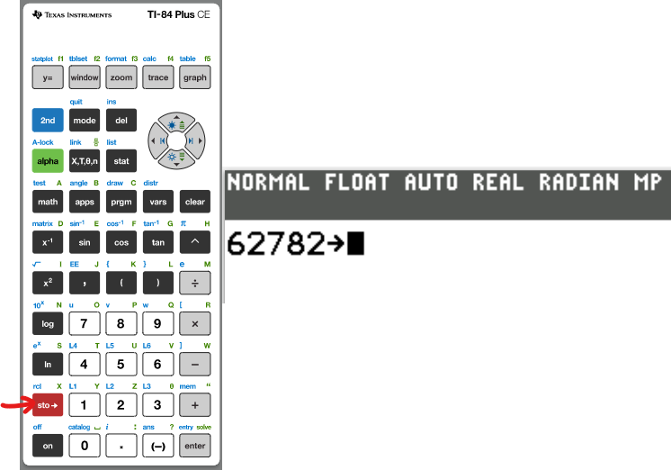
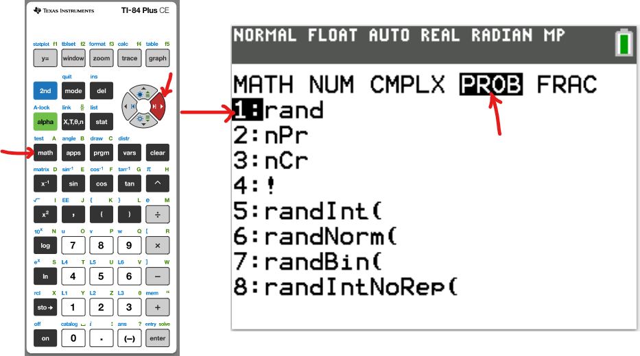
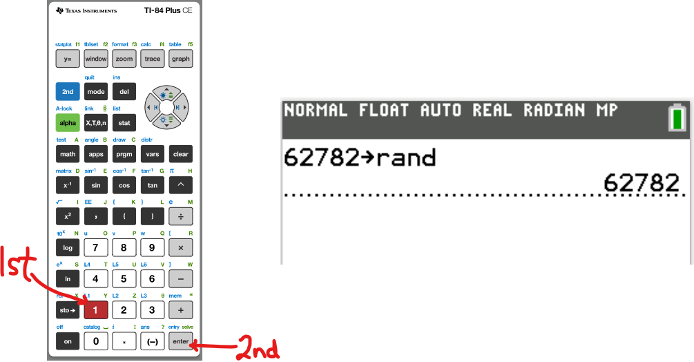
Because the songs are:
single digits
total of 9
selection of 3:
We shall use:
lower = 1
upper = 9
number, n = 3
(2.) Select 3 songs from 9 songs
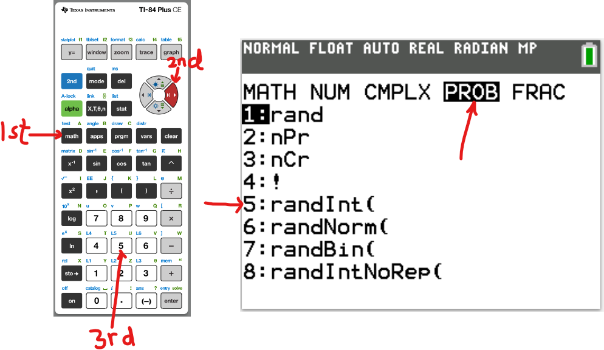
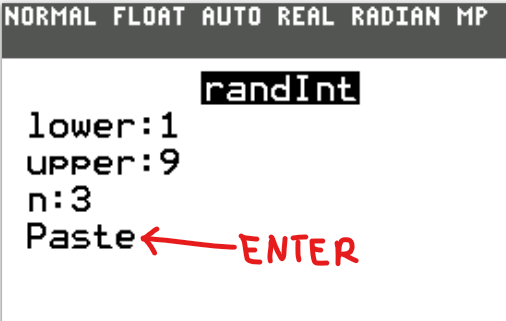
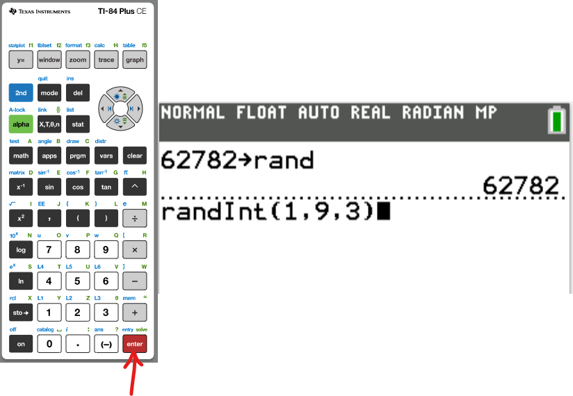
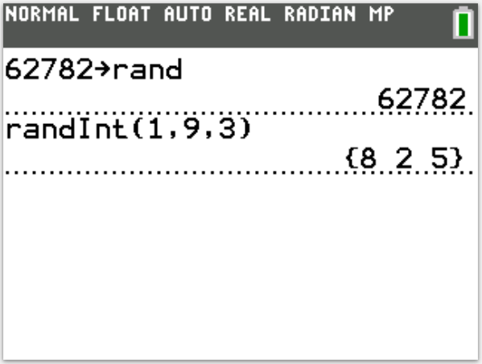
Student: What if a number repeats?
Teacher: We would use the No Repeat command: Number 8: randIntNoRep
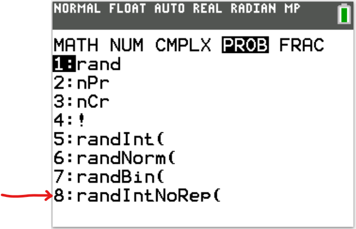
Generating Random Numbers Using Pearson StatCrunch
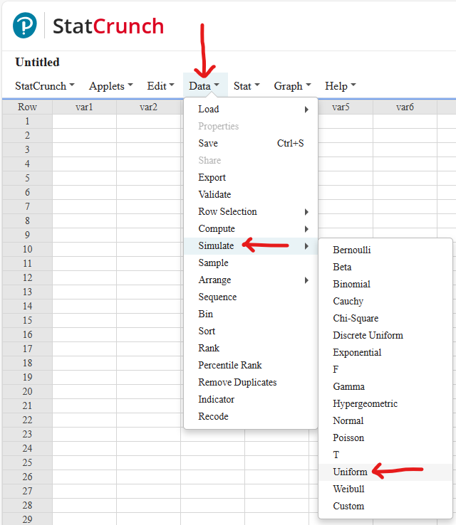
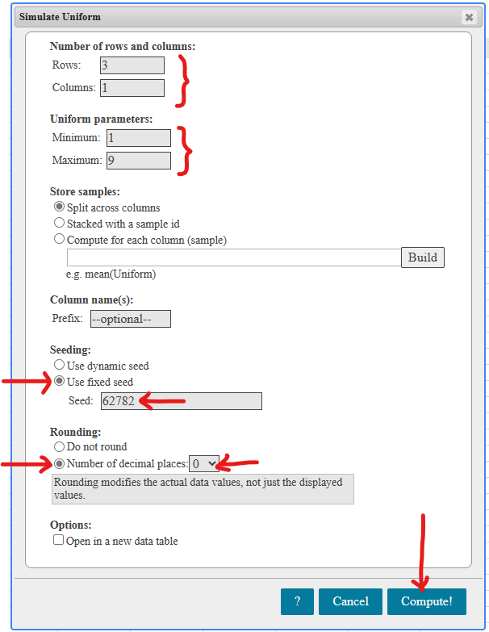
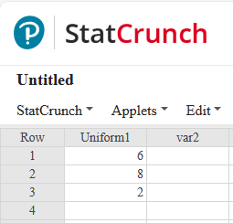
(15.) The manager of Samdom For Peace Apartments has a list of the names of 438 residents living in the east wing of the main apartment.
He intends to conduct an opinion survey of resident services.
Use the portion of the Table of Random Numbers below to produce five different three-digit numbers corresponding to the names selected.
Begin with the first column of the first row and work down each column.
| Table of Random Numbers | |
|---|---|
| $79651$ | $75929$ |
| $31992$ | $37168$ |
| $64880$ | $01006$ |
| $99251$ | $59613$ |
| $42118$ | $05606$ |
| $29102$ | $21720$ |
| $26945$ | $49265$ |
| $42999$ | $51017$ |
| $17845$ | $13429$ |
| $58116$ | $29876$ |
$438$ is a three-digit number. So, we are going to deal with the first three digits.
We begin with the first column of the first row, and work down each column.
The numbers are:
$796$ No. $796 \gt 438$
$319$ Yes.
$648$ No. $648 \gt 438$
$992$ No. $992 \gt 438$
$421$ Yes.
$291$ Yes.
$269$ Yes.
$429$ Yes.
The numbers corresponding to the residents chosen are: $319, 421, 291, 269, 429$
(2.) Stratified Sampling: This is a sampling technique in which the stratified sample is
obtained by:
separating the population into non-overlapping groups known as strata, and
obtaining a simple random sample from each stratum.
Teacher: Singular is Stratum; Plural is Strata
The individuals within each stratum should be homogenous.
This means that the individuals within each stratum should have similar characteristics such as
gender, class, and race among others.
Examples are:
(a.) Mr. C wants to know the average number of days in which the mathematics students at AWC were absent
during a semester. He visited each math class on a certain day when the class is in session, and
randomly selects $7$ students from each class.
(b.) Reuters poll conducted an election opinion poll of $25,000$ prospective voters for the Presidential
election. They sorted out female responses to observe the candidates rankings with women.
(c.) Several pieces of fruit from each tree in an orchard are selected.
(3.) Cluster Sampling: This is a sampling technique in which the cluster sample is
obtained by:
dividing the population into sections known as clusters,
randomly selecting some of those clusters, and
selecting all the individuals from those selected clusters.
Cluster sampling is similar to stratified sampling in the sense that the population is divided into
groups.
However, in cluster sampling; the entire individuals in those clusters are selected.
Examples are:
(a.) Mr. C is teaching a large class. He wants to know whether his students do their WebAssign homework
assignments. 😊 He randomly selects $3$ rows out of the 7 rows of students in his class and
asked all the students in those rows to show him the solutions of a certain homework assignment.
(b.) In a bid to improve its customer service, the management of a retail store randomly selects $50$
stores during a certain week. All customers present at those stores during that week are interviewed.
(4.) Systematic Sampling: This is a sampling technique in which the systematic sample is
obtained by selecting every $kth$ individual from the population.
Begin from a starting point, then select every kth individual.
That starting point or individual corresponds to a random number between 1 and k.
To obtain a systematic sample with high validity, there must be a sampling frame as a randomly ordered list.
Examples are:
(a.) BeGood Computers produces laptops. To estimate the percentage of defects in a certain batch,
the quality control manager starts from the $3^{rd}$ laptop, and selects every 12th laptop from
the assembly line.
(b.) The people greeter at a certain Walmart store asks every outgoing 7th customer his/her
shopping experience.
(c.) A telemarketer calls every 52nd person in a phone book directory that has over $100,000$
phone number listings of the residents of a city.
(5.) Multistage Sampling: This is a sampling technique in which samples are selected by a
combination of two or more different sampling techniques, or a combination of the same sampling
technique at different stages.
It consists of several stages (hence the name, "multistage") where each stage could comprise a
particular sampling technique. Most large-scale surveys obtain samples using a combination of
sampling techniques.
Examples are:
(a.) Micah Research Company wants to obtain a sample of undergraduate students in the United States.
They used a simple random sample to select 12 states. From each of the selected states, 12 colleges or
universities were chosen at random. Then, from each of the $144$ colleges or universities; a simple random
sample of $30$ undergraduate students were selected.
(b.) Nielsen Media Research
is an American firm that measures media audiences. They randomly select households and use an electronic
box, called the People Meter to monitor the programs viewed by the households. They sell the information
they obtain to television stations and companies. These results are helpful in determining the prices for
commercials. How do they select these households?
First Stage - Stratified Sampling: They divide the country into geographical areas or strata using the
U.S Census data. The strata typically consists of city blocks in urban areas and geographic regions in rural
areas.
Second Stage - Simple Random Sampling: They send representatives to the selected strata and lists
the households within the strata. The households are then randomly selected using a simple random sample.
(c.) Another good example of multistage sampling is the one used by the
U.S Census Bureau for the
CPS (Current Population Survey).
(6.) Convenience Sampling: This is a sampling technique in which the individuals in the
convenience sample (also known as a voluntary response sample) are easily obtained because the
individuals volunteered, rather than by randomness.
Begin from a starting point, then select every $kth$ individual.
The individuals in the sample voluntarily decide to participate in the survey.
Examples are:
(a.) America's Got Talent asked its viewers to vote for the contestant with the best performance.
Some voted. Some did not.
(b.) Micaiah resides in the community of Happyland, Oklahoma.
As part of his Statistics project, he would like to collect data on household size in his city. He asks
each person in his class for the size of their household and then reports a simple random sample.
Teacher: Due to the fact that the individuals in this sample were not selected by randomness,
do you think this sample is a representative of the population?
Do you think the results obtained from this sample are free from bias?
Do you think the results should be valid?
Please note the students' responses.
Exercise 5
Identify the sampling methods in these scenarios.
Explain what is wrong with the sampling method as applicable.
(16.) All $30$ students in Mr. C's Statistics class were asked to complete a survey to evaluate his
teaching/instruction.
Of those $30$ students, only $10\%$ responded.
Voluntary response/Self-selected response/Convenience sampling method.
Issues:
Many students did not respond to the survey.
The responses of those that responded may not reflect the opinions of the general population of the students in his Statistics class.
Bias in Sampling
Exercise 6
Determine whether the source has the potential to create a bias in a statistical study.
(17.)
Opposition to Breast-Feeding Resolution by U.S. Stuns World Health Officials
- New York Times
A resolution to encourage breast-feeding was expected to be approved quickly and easily by the
hundreds of government delegates who gathered in the Spring of 2018 in Geneva for the United Nations-affiliated World
Health Assembly.
But, the United States delegation, embracing the interests of infant formula manufacturers, upended the deliberations.
There appears to be a potential to create a bias.
There is an incentive to produce results that are in line with the United States and the infant formula manufacturers.
(18.) Georgia Northwestern Technical College (GNTC) obtained word counts from the most popular novels of the past three years.
There does not appear to be a potential to create a bias.
GNTC would not gain anything by manipulating the results.
Exercise 7
Determine whether these questions are biased or not.
If they are biased, write a less biased question.
(19.) Should companies that pollute the environment be forced to pay the costs of cleanup?
It is a biased question.
A less biased question would be: Should companies pay the costs for any environmental cleanup?
Data Organization
Objectives
Students will:
(1.) Organize raw data in classes using a frequency distribution table.
(2.) Compute the statistical properties of data.
(3.) Compute the relative frequencies of data.
(4.) Construct a relative frequency distribution table.
(5.) Compute the cumulative frequencies of data.
(6.) Construct a cumulative frequency distribution table.
Vocabulary Words
frequency distribution table, frequency table, class, classes, frequency, data set, class width,
tally, class size, range, number of classes, maximum value, minimum value, class interval,
class limit, lower class interval, lower class limit, upper class interval, upper class limit,
class midpoint, class mark, class boundary, relative frequency, proportion, cumulative frequency
A Frequency Distribution Table also known as a Frequency Table is used to organize data.
It organizes a data set by:
(1.) Separating the data value in classes and
(2.) Listing the frequencies of each class.
It helps us to understand the nature of the distribution of the a data set.
Example 1
A Good Samaritan (generous giver) asked for the pant/trouser sizes of the staff at Divine Mercy Orphanage.
The raw data of the sizes are listed as shown:
| Pant/Trouser Sizes | ||||||
|---|---|---|---|---|---|---|
|
$36$ $44$ $42$ $36$ $42$ |
$38$ $48$ $48$ $40$ $42$ |
$42$ $42$ $42$ $48$ $42$ |
$40$ $48$ $48$ $46$ $44$ |
$50$ $38$ $32$ $44$ $42$ |
$48$ $42$ $36$ $40$ $42$ |
$48$ $44$ $44$ $46$ $42$ |
$(a.)$ Draw a frequency distribution table for the data. Your table should have $7$ classes.
$(b.)$ Compute the statistical properties of the classes.
Solution
1st Step: We want 7 classes.
So, we need to find the class width that will give us 7 classes.
Class Width is also known as Class Size.
Class Size is the size of the class.
We shall write Five Formulas for the Class Width
First Formula for Class Width
$
Class\:\:Width = \dfrac{Range}{Number\:\:of\:\:classes} \\[5ex]
Range = Maximum - Minimum \\[3ex]
\therefore Class\:\:Width = \dfrac{Maximum - Minimum}{Number\:\:of\:\:classes} \\[5ex]
Maximum\:\:data\:\:value = 50 \\[3ex]
Minimum\:\:data\:\:value = 32 \\[3ex]
Class\:\:Width = \dfrac{50 - 32}{7} = \dfrac{18}{7} = 2.57 \\[5ex]
$
2nd Step: We need to round up the class width to the nearest integer.
This is the common rule.
Each class has a range of values, which are called Class Intervals
Class Interval is also known as Class Limit.
Class Intervals separates the classes, but with gaps between the classes.
The smallest data value of each class is the Lower Class Interval($LCI$) of that class
The highest data value of each class is the Upper Class Interval($UCI$) of that class
Second Formula for Class Width
$
Class\:\:Width = LCI\:\:of\:\:2nd\:\:Class - LCI\:\:of\:\:1st\:\:Class \\[3ex]
\rightarrow LCI\:\:of\:\:2nd\:\:Class = LCI\:\:of\:\:1st\:\:Class + Class\:\:Width \\[5ex]
$
3rd Step: Let us write the lower class interval of the first class by choosing
the minimum data value or any convenient value below the minimum.
Then, we write the lower class intervals of the remaining classes.
Student: Choosing the minimum data value or any convenient value below the minimum value?
May you please elaborate?
Teacher: Yes. In our example, we shall use the minimum data value.
However, in some cases - depending on the number of classes; we will need to use a value
below the minimum value.
Student: When do we have such a case? May you give an example?
Teacher: If you are given the number of classes but not given the class size, then you calculate
the class size using the first formula we just used.
Then, you try to use the minimum value (just as we shall use) and the second formula to write
the first class. We then write other classes until you get to the class that also contains the
maximum value. That class will be our final class.
Then, count the classes. If the number of classes is what is needed, then you did it well.
If the number of classes is greater or smaller than the required number of classes, then you will
need to adjust the lower class interval of the first class. Please ensure that the first class
contains the minimum value, just as the last class contains the maximum value.
Let us solve some examples where we shall just use the minimum value as the lower class interval
of our first class. Then, we shall solve examples where we need to adjust the value of the class
size as the lower class interval of the first class.
Please review the Solved Examples
for at least an example of such cases.
So, let us write the lower class intervals of the classes.
$
LCI\:\:of\:\:1st\:\:Class = Minimum\:\:value = 32 \\[3ex]
$
From the Second Formula for Class Width
$
LCI\:\:of\:\:2nd\:\:Class = LCI\:\:of\:\:1st\:\:Class + Class\:\:Width \\[3ex]
LCI\:\:of\:\:3rd\:\:Class = LCI\:\:of\:\:2nd\:\:Class + Class\:\:Width \\[3ex]
Class\:\:Width = 3 \\[3ex]
LCI\:\:of\:\:2nd\:\:Class = 32 + 3 = 35 \\[3ex]
Similarly \\[3ex]
LCI\:\:of\:\:3rd\:\:Class = 35 + 3 = 38 \\[3ex]
LCI\:\:of\:\:4th\:\:Class = 38 + 3 = 41 \\[3ex]
LCI\:\:of\:\:5th\:\:Class = 41 + 3 = 44 \\[3ex]
LCI\:\:of\:\:6th\:\:Class = 44 + 3 = 47 \\[3ex]
LCI\:\:of\:\:7th\:\:Class = 47 + 3 = 50 \\[5ex]
$
4th Step: Let us write the upper class interval ($UCI$) of the first class by noting some rules.
Then, we write the upper class intervals of the remaining classes.
What are those rules?
Let us get back to Class Intervals
Recall that class intervals separate the classes, but with gaps between the classes.
NOTE:
(1.) If the class intervals (the $LCI$ and the $UCI$) are integers,
then the difference between the lower class interval of a class and the upper class interval of the previous/preceding class is $1$
$
LCI\:\:of\:\:2nd\:\:Class - UCI\:\:of\:\:1st\:\:Class = 1 \\[3ex]
LCI\:\:of\:\:5th\:\:Class - UCI\:\:of\:\:4th\:\:Class = 1 \\[3ex]
LCI\:\:of\:\:8th\:\:Class - UCI\:\:of\:\:7th\:\:Class = 1 \\[5ex]
$
(2.) If the class intervals (the $LCI$ and the $UCI$) are decimals rounded to one decimal place,
then the difference between the lower class interval of a class and the upper class interval of the previous class is $0.1$
$
LCI\:\:of\:\:3rd\:\:Class - UCI\:\:of\:\:2nd\:\:Class = 0.1 \\[3ex]
LCI\:\:of\:\:6th\:\:Class - UCI\:\:of\:\:5th\:\:Class = 0.1 \\[3ex]
LCI\:\:of\:\:10th\:\:Class - UCI\:\:of\:\:9th\:\:Class = 0.1 \\[5ex]
$
(3.) If the class intervals (the $LCI$ and the $UCI$) are decimals rounded to two decimal places,
then the difference between the lower class interval of a class and the upper class interval of the previous class is $0.01$
$
LCI\:\:of\:\:4th\:\:Class - UCI\:\:of\:\:3rd\:\:Class = 0.01 \\[3ex]
LCI\:\:of\:\:13th\:\:Class - UCI\:\:of\:\:12th\:\:Class = 0.01 \\[3ex]
LCI\:\:of\:\:21st\:\:Class - UCI\:\:of\:\:20th\:\:Class = 0.01 \\[5ex]
$
and so on and so forth.
In this case (our data values are integers):
$
LCI\:\:of\:\:2nd\:\:Class - UCI\:\:of\:\:1st\:\:Class = 1 \\[3ex]
LCI\:\:of\:\:2nd\:\:Class = 35 \\[3ex]
\rightarrow 35 - UCI\:\:of\:\:1st\:\:Class = 1 \\[3ex]
UCI\:\:of\:\:1st\:\:Class = 35 - 1 \\[3ex]
UCI = 34 \\[3ex]
Recall\:\: LCI\:\:of\:\:1st\:\:Class = Minimum\:\:value = 32 \\[3ex]
\therefore 1st\:\:Class = 32 - 34 \\[5ex]
$
Third Formula for Class Width
$
Class\:\:Width = UCI\:\:of\:\:2nd\:\:Class - UCI\:\:of\:\:1st\:\:Class \\[3ex]
\rightarrow UCI\:\:of\:\:2nd\:\:Class = UCI\:\:of\:\:1st\:\:Class + Class\:\:Width \\[3ex]
UCI\:\:of\:\:3rd\:\:Class = UCI\:\:of\:\:2nd\:\:Class + Class\:\:Width \\[3ex]
Class\:\:Width = 3 \\[3ex]
UCI\:\:of\:\:2nd\:\:Class = 34 + 3 = 37 \\[3ex]
Similarly \\[3ex]
UCI\:\:of\:\:3rd\:\:Class = 37 + 3 = 40 \\[3ex]
UCI\:\:of\:\:4th\:\:Class = 40 + 3 = 43 \\[3ex]
UCI\:\:of\:\:5th\:\:Class = 43 + 3 = 46 \\[3ex]
UCI\:\:of\:\:6th\:\:Class = 46 + 3 = 49 \\[3ex]
UCI\:\:of\:\:7th\:\:Class = 49 + 3 = 52 \\[5ex]
$
So, our classes are:
$
1st\:\:Class:\:\: 32 - 34 \\[3ex]
2nd\:\:Class:\:\: 35 - 37 \\[3ex]
3rd\:\:Class:\:\: 38 - 40 \\[3ex]
4th\:\:Class:\:\: 41 - 43 \\[3ex]
5th\:\:Class:\:\: 44 - 46 \\[3ex]
6th\:\:Class:\:\: 47 - 49 \\[3ex]
7th\:\:Class:\:\: 50 - 52 \\[5ex]
$
So, we have written the seven classes.
But, let us compute the statistical properties of these classes.
These include: class midpoints, class boundaries, relative frequencies, and cumulative frequencies
for each class.
5th Step: Let us write the midpoints of each class.
Class Midpoints are also known as Class Marks
Class Midpoints are the midpoints of the classes.
Formula for Class Midpoint
$
Class\:\:Midpoint = \dfrac{LCI + UCI}{2} \\[5ex]
1st\:\:Class:\:\: Class\:\:Midpoint = \dfrac{32 + 34}{2} = \dfrac{66}{2} = 33 \\[5ex]
2nd\:\:Class:\:\: Class\:\:Midpoint = \dfrac{35 + 37}{2} = \dfrac{72}{2} = 36 \\[5ex]
3rd\:\:Class:\:\: Class\:\:Midpoint = \dfrac{38 + 40}{2} = \dfrac{78}{2} = 39 \\[5ex]
4th\:\:Class:\:\: Class\:\:Midpoint = \dfrac{41 + 43}{2} = \dfrac{84}{2} = 42 \\[5ex]
5th\:\:Class:\:\: Class\:\:Midpoint = \dfrac{44 + 46}{2} = \dfrac{90}{2} = 45 \\[5ex]
6th\:\:Class:\:\: Class\:\:Midpoint = \dfrac{47 + 49}{2} = \dfrac{96}{2} = 48 \\[5ex]
7th\:\:Class:\:\: Class\:\:Midpoint = \dfrac{50 + 52}{2} = \dfrac{102}{2} = 51 \\[5ex]
$
Student: I just noticed a pattern with the class midpoints and the class width
Teacher: Good observation. However, please use the formula I gave you.
Do not use a shortcut of finding the class midpoint of the first class and adding the class width
to find the class midpoints of the remaining classes.
It is not the formula/technique we use for finding the class midpoints, even though the technique
worked in this case. It does not work all the time.
Recall: Class Intervals separate the classes, but with gaps between the classes.
What about any statistical property that does not have any gaps between the classes?
What statistical property takes into account "all" the data...especially for continuous data?
For example: In the first two classes:
First class: $32 - \color{red}{34}$
Second Class: $\color{red}{35} - 37$
What happens to the data values between $34$ and $35$?
This brings us to...
6th Step: Let us write the class boundary of each class.
Class Boundaries separate the classes, but without gaps between the classes.
The Class Boundary for each class comprise the Lower Class Boundary, $LCB$ and the
Upper Class Boundary, $UCB$
Formula for Class Boundaries
$
Lower\:\:Class\:\:Boundary\:\:of\:\:a\:\:class = \dfrac{LCI\:\:of\:\:that\:\:class + UCI\:\:of\:\:previous/preceding\:\:class}{2} \\[5ex]
Upper\:\:Class\:\:Boundary\:\:of\:\:a\:\:class = \dfrac{UCI\:\:of\:\:that\:\:class + LCI\:\:of\:\:next/succeeding\:\:class}{2} \\[5ex]
LCB\:\:of\:\:2nd\:\:Class = \dfrac{LCI\:\:of\:\:2nd\:\:Class + UCI\:\:of\:\:1st\:\:Class}{2} = \dfrac{35 + 34}{2} = \dfrac{69}{2} = 34.5 \\[5ex]
UCB\:\:of\:\:2nd\:\:Class = \dfrac{UCI\:\:of\:\:2nd\:\:Class + LCI\:\:of\:\:3rd\:\:Class}{2} = \dfrac{37 + 38}{2} = \dfrac{75}{2} = 37.5 \\[5ex]
Class\:\:Boundary\:\:of\:\:2nd\:\:Class = 34.5 - 37.5 \\[3ex]
LCB\:\:of\:\:3rd\:\:Class = \dfrac{LCI\:\:of\:\:3rd\:\:Class + UCI\:\:of\:\:2nd\:\:Class}{2} = \dfrac{38 + 37}{2} = \dfrac{69}{2} = 37.5 \\[5ex]
UCB\:\:of\:\:3rd\:\:Class = \dfrac{UCI\:\:of\:\:3rd\:\:Class + LCI\:\:of\:\:4th\:\:Class}{2} = \dfrac{40 + 41}{2} = \dfrac{81}{2} = 40.5 \\[5ex]
Class\:\:Boundary\:\:of\:\:3rd\:\:Class = 37.5 - 40.5 \\[5ex]
$
Student: What about the class boundary of the first class?
Teacher: Good question.
What do you think?
Student: I think the $UCB$ of the first class would be: $34.5$
Teacher: That is correct.
How did you get it?
From the formula?
Student: No. I noticed that the $UCB$ of the first class should be the $LCB$ of the second class
because there are no gaps between the classes. Is that right?
Teacher: That is very correct...and good reasoning.
But, you can also get it from the formula I gave you.
Student: Yes, I know.
But, how do we get the $LCB$ of the first class?
What about the class boundary of the first class?
$
UCB\:\:of\:\:1st\:\:Class = \dfrac{UCI\:\:of\:\:1st\:\:Class + LCI\:\:of\:\:2nd\:\:Class}{2} = \dfrac{34 + 35}{2} = \dfrac{69}{2} = 34.5 \\[5ex]
$
But, how do we write the lower class boundary of the first class?
$
LCB\:\:of\:\:1st\:\:Class = \dfrac{LCI\:\:of\:\:1st\:\:Class + UCI\:\:of\:\:previous\:\:Class}{2} \\[5ex]
$
We do not have a previous class.
But, assuming we did; the $UCI$ of that class would be $34 - 3 = 31$
$
\therefore LCB\:\:of\:\:1st\:\:Class = \dfrac{32 + 31}{2} = \dfrac{63}{2} = 31.5 \\[5ex]
Class\:\:Boundary\:\:of\:\:1st\:\:Class = 31.5 - 34.5 \\[3ex]
$
Also, how do we write the upper class boundary of the seventh class?
$
UCB\:\:of\:\:7th\:\:Class = \dfrac{UCI\:\:of\:\:7th\:\:Class + LCI\:\:of\:\:next\:\:Class}{2} \\[5ex]
$
We do not have a next class.
But, assuming we did; the $LCI$ of that class would be $50 + 3 = 53$
$
\therefore UCB\:\:of\:\:7th\:\:Class = \dfrac{52 + 53}{2} = \dfrac{105}{2} = 52.5 \\[5ex]
Class\:\:Boundary\:\:of\:\:7th\:\:Class = 49.5 - 52.5 \\[3ex]
$
Teacher: Did you notice any relationship between the class boundary and the class width?
Student: Yes.
The class width is the difference between the upper class boundary and the lower class boundary
of the same class.
Teacher: That is very correct.
This leads us to write the...
Fourth Formula for Class Width
$
Class\:\:Width = UCB\:\:of\:\:a\:\:class - LCB\:\:of\:\:the\:\:same\:\:class \\[3ex]
UCB\:\:of\:\:a\:\:class - LCB\:\:of\:\:the\:\:same\:\:class = Class\:\:Width \\[3ex]
\rightarrow UCB\:\:of\:\:a\:\:class = Class\:\:Width + LCB\:\:of\:\:the\:\:same\:\:class \\[3ex]
UCB\:\:of\:\:a\:\:class = LCB\:\:of\:\:the\:\:same\:\:class + Class\:\:Width \\[3ex]
Class\:\:Width = UCB\:\:of\:\:1st\:\:Class - LCB\:\:of\:\:1st\:\:Class = 34.5 - 31.5 = 3 \\[3ex]
Class\:\:Width = UCB\:\:of\:\:2nd\:\:Class - LCB\:\:of\:\:2nd\:\:Class = 37.5 - 34.5 = 3 \\[3ex]
$
Because class boundaries do not have gaps between the classes, we notice that:
$
UCB\:\:of\:\:1st\:\:Class = LCB\:\:of\:\:2nd\:\:Class \\[3ex]
UCB\:\:of\:\:2nd\:\:Class = LCB\:\:of\:\:3rd\:\:Class \\[3ex]
This\:\:implies\:\:that \\[3ex]
LCB\:\:of\:\:1st\:\:Class = LCB\:\:of\:\:2nd\:\:Class - Class\:\:Width \\[3ex]
Also \\[3ex]
UCB\:\:of\:\:7th\:\:Class = UCB\:\:of\:\:6th\:\:Class + Class\:\:Width \\[3ex]
$
This leads us to another formula for class width.
Fifth Formula for Class Width
$
Class\:\:Width = LCB\:\:of\:\:a\:\:Class - LCB\:\:of\:\:previous\:\:class \\[3ex]
\rightarrow LCB\:\:of\:\:a\:\:Class = LCB\:\:of\:\:previous\:\:class + Class\:\:Width \\[3ex]
Class\:\:Width = UCB\:\:of\:\:a\:\:Class - UCB\:\:of\:\:previous\:\:class \\[3ex]
\rightarrow UCB\:\:of\:\:a\:\:Class = UCB\:\:of\:\:previous\:\:class + Class\:\:Width \\[3ex]
$
Let us write the lower class boundaries of the remaining classes.
$
LCB\:\:of\:\:3rd\:\:Class = LCB\:\:of\:\:2nd\:\:Class + Class\:\:Width \\[3ex]
LCB\:\:of\:\:3rd\:\:Class = 34.5 + 3 = 37.5 \\[3ex]
Similarly \\[3ex]
LCB\:\:of\:\:4th\:\:Class = 37.5 + 3 = 40.5 \\[3ex]
LCB\:\:of\:\:5th\:\:Class = 40.5 + 3 = 43.5 \\[3ex]
LCB\:\:of\:\:6th\:\:Class = 43.5 + 3 = 46.5 \\[3ex]
LCB\:\:of\:\:7th\:\:Class = 46.5 + 3 = 49.5 \\[3ex]
$
Let us write the upper class boundaries of the remaining classes.
$
UCB\:\:of\:\:3rd\:\:Class = UCB\:\:of\:\:2nd\:\:Class + Class\:\:Width \\[3ex]
UCB\:\:of\:\:3rd\:\:Class = 37.5 + 3 = 40.5 \\[3ex]
Similarly \\[3ex]
UCB\:\:of\:\:4th\:\:Class = 40.5 + 3 = 43.5 \\[3ex]
UCB\:\:of\:\:5th\:\:Class = 43.5 + 3 = 46.5 \\[3ex]
UCB\:\:of\:\:6th\:\:Class = 46.5 + 3 = 49.5 \\[3ex]
UCB\:\:of\:\:7th\:\:Class = 49.5 + 3 = 52.5 \\[5ex]
$
$\boldsymbol{7th\:\:Step}$ Let us write the relative frequency of each class.
Relative Frequency, $RF$ (also known as Proportion) of a class is the ratio of the frequency of that class to the total
frequency of the data set.
It is the proportion of the observations that display the relevant characteristic.
It is used in summarizing a distribution.
Formula for Relative Frequency
$
RF\:\:of\:\:a\:\:class = \dfrac{Frequency\:\:of\:\:that\:\:class}{\Sigma F} \\[5ex]
\Sigma F \:\:means\:\:summation\:\:of\:\:the\:\:frequencies \\[3ex]
RF\:\:of\:\:3rd\:\:Class = \dfrac{Frequency\:\:of\:\:3rd\:\:Class}{\Sigma F} \\[5ex]
$
Relative Frequency of a class is expressed as a fraction, decimal, or percent.
The sum of the relative frequencies of all the classes should be equal to $100\%$ or $1$
$
\Sigma RF = 100\% \\[3ex]
\Sigma RF = 1 \\[3ex]
$
We shall calculate the relative frequencies in the Frequency Table.
$\boldsymbol{8th\:\:Step}$ Let us write the cumulative frequency of each class.
Cumulative Frequency, $CF$ of a class is the sum of the frequencies prior to that class and
the frequency of that class.
Formula for Cumulative Frequency
$
CF\:\:of\:\:1st\:\:Class = Frequency\:\:of\:\:1st\:\:Class \\[3ex]
CF\:\:of\:\:2nd\:\:Class = Frequency\:\:of\:\:1st\:\:Class + Frequency\:\:of\:\:2nd\:\:Class \\[3ex]
CF\:\:of\:\:3rd\:\:Class = Frequency\:\:of\:\:1st\:\:Class + Frequency\:\:of\:\:2nd\:\:Class + Frequency\:\:of\:\:3rd\:\:Class \\[3ex]
$
The last cumulative frequency (the cumulative frequency of the last class) is the sum of all the
frequencies.
$Last\:\:CF = CF\:\:of\:\:Last\:\:Class = \Sigma F \\[3ex]$
We shall calculate the cumulative frequencies in the Frequency Table.
The Frequency Distribution Table is drawn as shown:
| Class Intervals | Tally | Frequency, $F$ | Class Midpoints | Class Boundaries | Relative Frequency, $RF$ | Cumulative Frequency, $CF$ |
|---|---|---|---|---|---|---|
| $32 - 34$ | I | $1$ | $33$ | $31.5 - 34.5$ | $\dfrac{1}{35} = 0.02875 = 2.875\%$ | $1$ |
| $35 - 37$ | III | $3$ | $36$ | $34.5 - 37.5$ | $\dfrac{3}{35} = 0.08571 = 8.571\%$ | $1 + 3 = 4$ |
| $38 - 40$ | $5$ | $39$ | $37.5 - 40.5$ | $\dfrac{5}{35} = \dfrac{1}{7} = 0.14286 = 14.286\%$ | $4 + 5 = 9$ | |
| $41 - 43$ | $11$ | $42$ | $40.5 - 43.5$ | $\dfrac{11}{35} = 0.31429 = 31.429\%$ | $9 + 11 = 20$ | |
| $44 - 46$ | $7$ | $45$ | $43.5 - 46.5$ | $\dfrac{7}{35} = \dfrac{1}{5} = 0.2 = 20\%$ | $20 + 7 = 27$ | |
| $47 - 49$ | $7$ | $48$ | $46.5 - 49.5$ | $\dfrac{7}{35} = \dfrac{1}{5} = 0.2 = 20\%$ | $27 + 7 = 34$ | |
| $50 - 52$ | I | $1$ | $51$ | $49.5 - 52.5$ | $\dfrac{1}{35} = 0.02875 = 2.875\%$ | $34 + 1 = \color{red}{35}$ |
| $\Sigma F = \color{red}{35}$ | $\Sigma RF = 1 = 100\%$ |
CHECKS
$(1.)$ The summation of the frequencies, $\Sigma F$ is equal to the sample size.
$(2.)$ The summation of relative frequencies, $\Sigma RF$ is equal to $1$ or $100\%$
$(3.)$ The value in the last row of the cumulative frequency should be the same value as the
summation of the frequencies (as noted by the red color in the table)
MORE NOTES
$(1.)$ If the number of classes is given but the class width is not given,
use a class width that would give an ideal (a reasonable) number of classes.
$(2.)$ If the class width is given, use the class width.
$(3.)$ If the number of classes and the class width are given but the class width did not give that
number of classes; then adjust the class width to give the required number of classes.
Unless otherwise specified by your professor, do not create classes as you wish. Adjust the class size
to give the required number of classes.
$(4.)$ The first class must contain the smallest data value (minimum value).
$(5.)$ The last class must contain the highest data value (maximum value).
$(6.)$ Each class must be uniform. In other words, the class width/class size must be the same.
$(7.)$ Follow the directions specified by your professor on what should be in the frequency table.
He/She grades your work.
Data Presentation
Objectives
Students will:
(1.) Represent data using several data presentation tools.
(2.) Calculate the sectorial angles of the variables in pie charts.
(3.) Calculate the percentages of the variables in pie charts.
(4.) Interpret the data presented with several data presentation tools.
(5.) Identify misleading graphs.
(6.) Correct misleading graphs.
Vocabulary Words
frequency distribution table, frequency table, dotplot, boxplot (also known as box-and-whisker plot), stemplot (stem-and-leaf plot), scatter plot, scatter diagram, normal quantile plot, quantile-quantile plot, QQ plot, line graph, bar graph, bar chart, circle graph, pie chart, cumulative frequency graph, ogive, cumulative frequency curve, Pareto chart, pictogram, histogram, frequency polygon, cumulative frequency polygon, percentages, two-way table, contour map
First identify whether the variable under investigation is numerical or categorical.
If the variable is numerical, a dotplot, histogram, or stemplot can be used.
If the variable is categorical, a bar chart, Pareto chart, or pie chart can be used. However, bar charts and pie charts are commonly used.
When describing the distribution of a categorical variable, the category that appears most often is the mode.
When summarizing graphs of categorical data, report the mode(s), and describe the variability.
If the distribution of a categorical variable has a lot of diversity or many observations in many different categories, the variability is high.
If the distribution has a little diversity, or if many observations fall into the same category, the variability is low.
Pay attention to the differences in the charts and which would be the best to display the specific data set.
The distribution of a sample organizes data by recording all the values observed in a sample and the number of times each value was observed.
The two-step process used to examine distributions are: See the data and Summarize it.
When examining a distribution, first: visualize or see the distribution; second: use characteristics of the visualization to summarize the data.
All methods used for visualizing distributions are based on making a mark that indicates the number of times each value occurs in the data set.
When examining a distribution of numerical data:
(1.) The shape, center, and spread need to be considered.
(2.) The three basic characteristics of the shape of the distribution are:
(a.) Symmetric or skewness of the distribution
(b.) The number of mounds that appear in the distribution (based on the number of modes of the dataset).
(c.) Presence of outliers (whether unusually large or small values are present). Outliers are extreme values that are so large or so small that they do not fit into the pattern of the distribution.
A right-skewed distribution is the distribution of a variable in which most of the values are relatively small but also has a few very large values.
The graphical representation of the distribution appear to have a tail that extends to the right.
For example: (1.) the number of hours of TV viewed by a sample of people in a week: the smallest possible value in this case is 0.
Most values will likely cluster around a common value. However, the presence of a small number of people who view TV for long hours will make the distribution to be right-skewed.
Percentages or rates are often better than counts for making comparisons because they account for possible differences among the sizes of groups.
A two-way table is used to summarize two potentially related categorical variables.
A contour map can hone in on the trend the same way a regression line can.
It helps one see trends in the concentration on a map.
Histogram
Histograms produce a smooth graphic by grouping observations into intervals known as bins.
In a histogram, observations are grouped into intervals called bins.
Changing the width of bins in a histogram changes the shape of the histogram. Narrow bins results in a spiky histogram that shows a lot of detail, while wider bins hide more detail.
Bar Chart
For a bar chart:
The horizontal axis of the bar chart represents the categories of the distribution.
| Bar Chart | Histogram | |
|---|---|---|
| (1.) | It is best suited for presenting qualitative (categorical) variables. | It is best suited for presenting quantitative (numerical) variables. |
| (2.) | There are gaps between the bars. |
Typically, there are no gaps between the bars unless no value was observed for that variable. If there is a gap, the gap indicates that no values were observed in the interval represented by the gap. |
| (3.) | It does not matter how wide or narrow the bars are. | The widths of the bars have meaning. |
| (4.) | Sometimes, it does not matter in which order the bars are placed. |
The order of the placement of the bars matter. A histogram has bars in ascending order. |
Stem-and-Leaf Plot (Stemplot)
A stem-and-leaf plot (also known as a stemplot) is preferably used for visualizing numerical variables when:
(1.) Technology is not available.
(2.) The data set is not large.
(3.) The actual values of the data need to be seen.
Pareto Chart
A Pareto chart is a bar chart that is sorted from most frequent to least frequent.
Pie Chart
Pie charts are not commonly used by statisticians or in scientific settings because the human eye has a difficult time judging how much area is taken up by it's wedge-shaped slice.
$
Sectorial\;\;\angle\;\;for\;\;each\;\;age\;\;group = \dfrac{frequency\;\;of\;\;the\;\;age\;\;group}{\Sigma f} * 100 \\[5ex]
$
References
Chukwuemeka, Samuel Dominic (2023). Introductory Statistics
Retrieved from https://statistical-science.appspot.com/
Bennett, J. O., & Briggs, W. L. (2019).
Using and Understanding Mathematics: A Quantitative Reasoning Approach. Pearson.
Black, Ken. (2012). Business Statistics for Contemporary Decision Making (7th ed.).
New Jersey: Wiley
Gould, R., Wong, R., & Ryan, C. N. (2020). Introductory Statistics: Exploring the world through data
(3rd ed.). Pearson.
Kozak, Kathryn. (2015). Statistics Using Technology (2nd ed.).
OpenStax, Introductory Statistics.OpenStax CNX. Sep 28, 2016.
Retrieved from https://cnx.org/contents/30189442-6998-4686-ac05-ed152b91b9de@18.12
Sullivan, M., & Barnett, R. (2013). Statistics: Informed decisions using data with an introduction
to mathematics of finance
(2nd custom ed.). Boston: Pearson Learning Solutions.
Triola, M. F. (2015). Elementary Statistics using the TI-83/84 Plus Calculator (5th ed.). Boston: Pearson
Triola, M. F. (2022). Elementary Statistics. (14th ed.) Hoboken: Pearson.
Weiss, Neil A. (2015). Elementary Statistics
(9th ed.). Boston: Pearson
Authority (NZQA), (n.d.). Mathematics and Statistics subject resources. www.nzqa.govt.nz. Retrieved December 14,
2020, from https://www.nzqa.govt.nz/ncea/subjects/mathematics/levels/
CrackACT. (n.d.). Retrieved from http://www.crackact.com/act-downloads/
CMAT Question Papers CMAT Previous Year Question Bank - Careerindia. (n.d.). https://www.careerindia.com. Retrieved
May 30, 2020, from https://www.careerindia.com/entrance-exam/cmat-question-papers-e23.html
CSEC Math Tutor. (n.d). Retrieved from https://www.csecmathtutor.com/past-papers.html
Desmos. (n.d.). Desmos Graphing Calculator. https://www.desmos.com/calculator
DLAP Website. (n.d.). Curriculum.gov.mt.
https://curriculum.gov.mt/en/Examination-Papers/Pages/list_secondary_papers.aspx
Free Jamb Past Questions And Answer For All Subject 2020. (2020, January 31). Vastlearners.
https://www.vastlearners.com/free-jamb-past-questions/
Geogebra. (2019). Graphing Calculator - GeoGebra. Geogebra.org. https://www.geogebra.org/graphing?lang=en
GCSE Exam Past Papers: Revision World. Retrieved April 6, 2020, from
https://revisionworld.com/gcse-revision/gcse-exam-past-papers
HSC exam papers | NSW Education Standards. (2019). Nsw.edu.au.
https://educationstandards.nsw.edu.au/wps/portal/nesa/11-12/resources/hsc-exam-papers
JAMB Past Questions, WAEC, NECO, Post UTME Past Questions. (n.d.). Nigerian Scholars. Retrieved February 12, 2022,
from https://nigerianscholars.com/past-questions/
KCSE Past Papers by Subject with Answers-Marking Schemes. (n.d.). ATIKA SCHOOL.
Retrieved June 16, 2022, from https://www.atikaschool.org/kcsepastpapersbysubject
Myschool e-Learning Centre - It's Time to Study! - Myschool. (n.d.). https://myschool.ng/classroom
Netrimedia. (2022, May 2). ICSE 10th Board Exam Previous Papers- Last 10 Years. Education Observer.
https://www.educationobserver.com/icse-class10-previous-papers/
NSC Examinations. (n.d.). www.education.gov.za.
https://www.education.gov.za/Curriculum/NationalSeniorCertificate(NSC)Examinations.aspx
Papua New Guinea: Department of Education. (n.d.). www.education.gov.pg. Retrieved November 24, 2020, from
http://www.education.gov.pg/TISER/exams.html
School Curriculum and Standards Authority (SCSA): K-12. Past ATAR Course Examinations. Retrieved December 10, 2021,
from https://senior-secondary.scsa.wa.edu.au/further-resources/past-atar-course-exams
TI Products | Calculators and Technology | Texas Instruments. (n.d.). Education.ti.com. Retrieved March 18, 2023, from https://education.ti.com/en/products
West African Examinations Council (WAEC). Retrieved May 30, 2020, from
https://waeconline.org.ng/e-learning/Mathematics/mathsmain.html
51 Real SAT PDFs and List of 89 Real ACTs (Free) : McElroy Tutoring. (n.d.).
Mcelroytutoring.com. Retrieved December 12, 2022,
from https://mcelroytutoring.com/lower.php?url=44-official-sat-pdfs-and-82-official-act-pdf-practice-tests-free